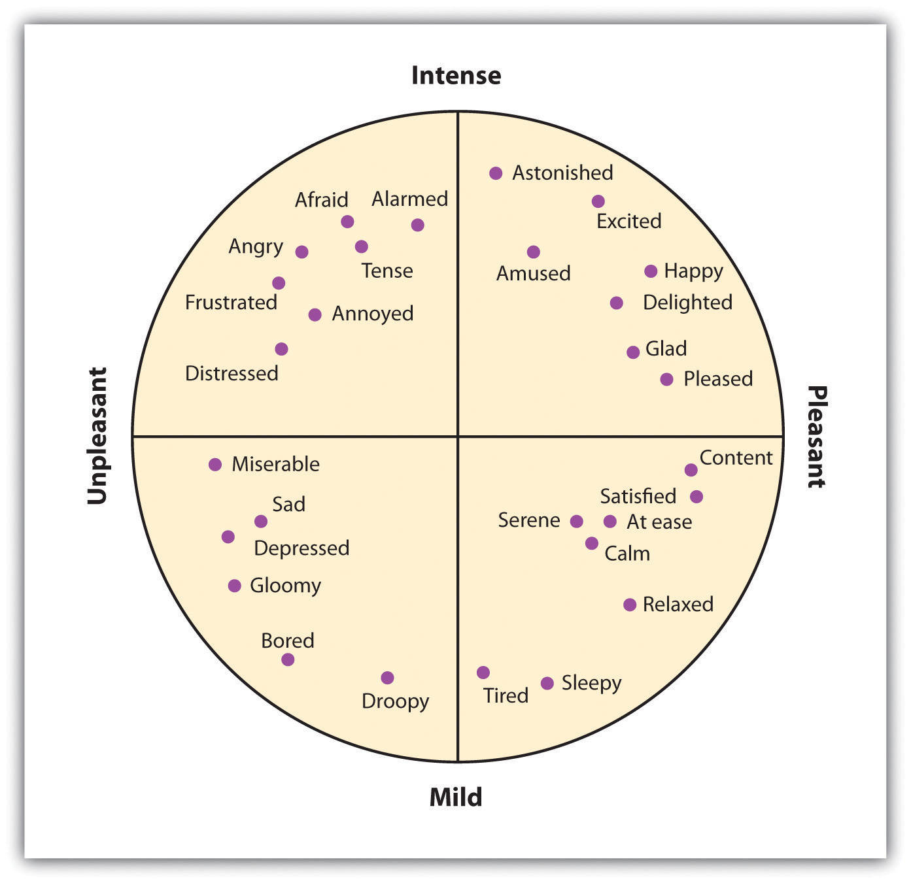
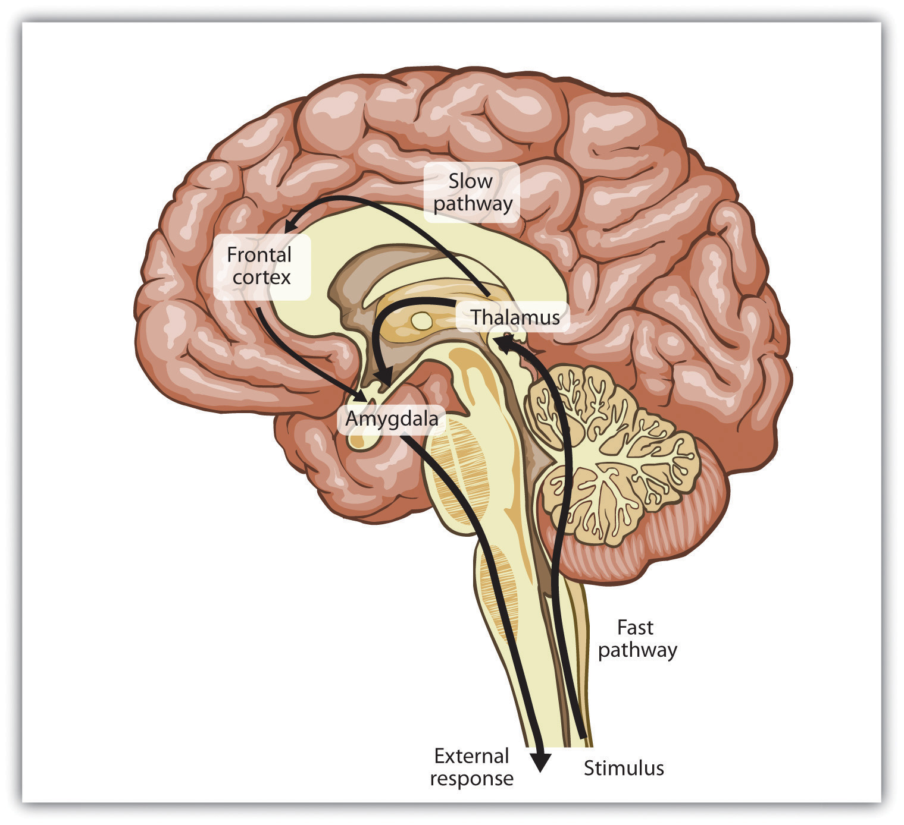
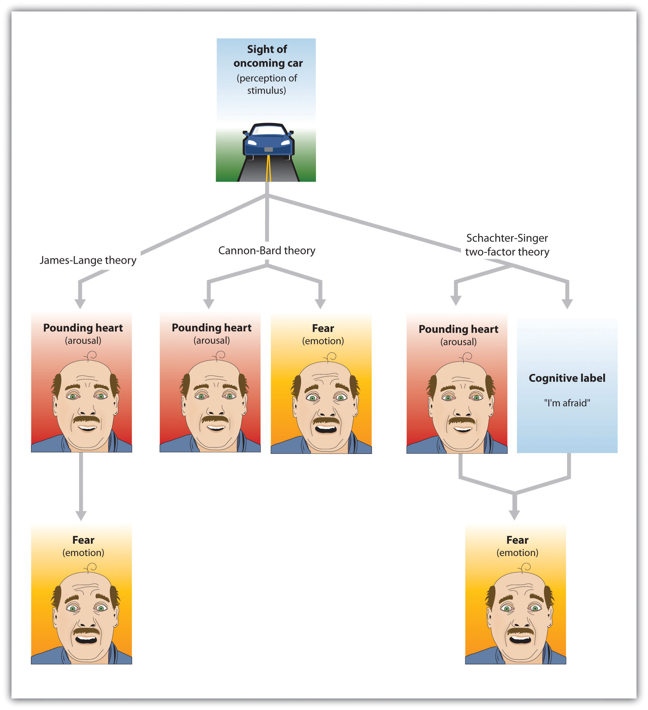
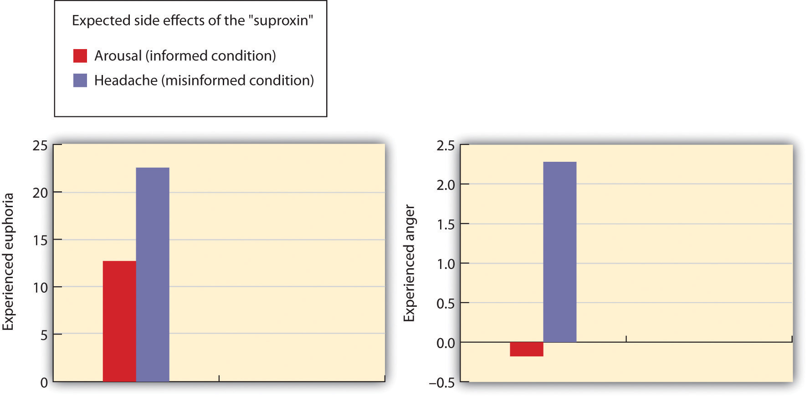

The most fundamental emotions, known as the basic emotionsThe emotions of anger, disgust, fear, happiness, sadness, and surprise., are those of anger, disgust, fear, happiness, sadness, and surprise. The basic emotions have a long history in human evolution, and they have developed in large part to help us make rapid judgments about stimuli and to quickly guide appropriate behavior (LeDoux, 2000).LeDoux, J. E. (2000). Emotion circuits in the brain. Annual Review of Neuroscience, 23, 155–184. The basic emotions are determined in large part by one of the oldest parts of our brain, the limbic system, including the amygdala, the hypothalamus, and the thalamus. Because they are primarily evolutionarily determined, the basic emotions are experienced and displayed in much the same way across cultures (Ekman, 1992; Elfenbein & Ambady, 2002, 2003; Fridland, Ekman, & Oster, 1987),Ekman, P. (1992). Are there basic emotions? Psychological Review, 99(3), 550–553; Elfenbein, H. A., & Ambady, N. (2002). On the universality and cultural specificity of emotion recognition: A meta-analysis. Psychological Bulletin, 128, 203–23; Fridlund, A. J., Ekman, P., & Oster, H. (1987). Facial expressions of emotion. In A. Siegman & S. Feldstein (Eds.), Nonverbal behavior and communication (2nd ed., pp. 143–223). Hillsdale, NJ: Lawrence Erlbaum Associates. and people are quite accurate at judging the facial expressions of people from different cultures. View Note 10.8 "Video Clip: The Basic Emotions" to see a demonstration of the basic emotions.
Not all of our emotions come from the old parts of our brain; we also interpret our experiences to create a more complex array of emotional experiences. For instance, the amygdala may sense fear when it senses that the body is falling, but that fear may be interpreted completely differently (perhaps even as “excitement”) when we are falling on a roller-coaster ride than when we are falling from the sky in an airplane that has lost power. The cognitive interpretations that accompany emotions—known as cognitive appraisalThe cognitive interpretations that accompany emotions.—allow us to experience a much larger and more complex set of secondary emotions, as shown in Figure 10.2 "The Secondary Emotions". Although they are in large part cognitive, our experiences of the secondary emotions are determined in part by arousal (on the vertical axis of Figure 10.2 "The Secondary Emotions") and in part by their valence—that is, whether they are pleasant or unpleasant feelings (on the horizontal axis of Figure 10.2 "The Secondary Emotions")
Figure 10.2 The Secondary Emotions
The secondary emotions are those that have a major cognitive component. They are determined by both their level of arousal (low to high) and their valence (pleasant to unpleasant).
Source: Adapted from Russell, J. A. (1980). A circumplex model of affect. Journal of Personality and Social Psychology, 39, 1161–1178.
When you succeed in reaching an important goal, you might spend some time enjoying your secondary emotions, perhaps the experience of joy, satisfaction, and contentment. But when your close friend wins a prize that you thought you had deserved, you might also experience a variety of secondary emotions (in this case, the negative ones)—for instance, feeling angry, sad, resentful, and ashamed. You might mull over the event for weeks or even months, experiencing these negative emotions each time you think about it (Martin & Tesser, 2006).Martin, L. L., & Tesser, A. (2006). Extending the goal progress theory of rumination: Goal reevaluation and growth. In L. J. Sanna & E. C. Chang (Eds.), Judgments over time: The interplay of thoughts, feelings, and behaviors (pp. 145–162). New York, NY: Oxford University Press.
The distinction between the primary and the secondary emotions is paralleled by two brain pathways: a fast pathway and a slow pathway (Damasio, 2000; LeDoux, 2000; Ochsner, Bunge, Gross, & Gabrielli, 2002).Damasio, A. (2000). The feeling of what happens: Body and emotion in the making of consciousness. New York, NY: Mariner Books; LeDoux, J. E. (2000). Emotion circuits in the brain. Annual Review of Neuroscience, 23, 155–184; Ochsner, K. N., Bunge, S. A., Gross, J. J., & Gabrieli, J. D. E. (2002). Rethinking feelings: An fMRI study of the cognitive regulation of emotion. Journal of Cognitive Neuroscience, 14(8), 1215–1229. The thalamus acts as the major gatekeeper in this process (Figure 10.3 "Slow and Fast Emotional Pathways"). Our response to the basic emotion of fear, for instance, is primarily determined by the fast pathway through the limbic system. When a car pulls out in front of us on the highway, the thalamus activates and sends an immediate message to the amygdala. We quickly move our foot to the brake pedal. Secondary emotions are more determined by the slow pathway through the frontal lobes in the cortex. When we stew in jealousy over the loss of a partner to a rival or recollect on our win in the big tennis match, the process is more complex. Information moves from the thalamus to the frontal lobes for cognitive analysis and integration, and then from there to the amygdala. We experience the arousal of emotion, but it is accompanied by a more complex cognitive appraisal, producing more refined emotions and behavioral responses.
Figure 10.3 Slow and Fast Emotional Pathways
There are two emotional pathways in the brain (one slow and one fast), both of which are controlled by the thalamus.
Although emotions might seem to you to be more frivolous or less important in comparison to our more rational cognitive processes, both emotions and cognitions can help us make effective decisions. In some cases we take action after rationally processing the costs and benefits of different choices, but in other cases we rely on our emotions. Emotions become particularly important in guiding decisions when the alternatives between many complex and conflicting alternatives present us with a high degree of uncertainty and ambiguity, making a complete cognitive analysis difficult. In these cases we often rely on our emotions to make decisions, and these decisions may in many cases be more accurate than those produced by cognitive processing (Damasio, 1994; Dijksterhuis, Bos, Nordgren, & van Baaren, 2006; Nordgren & Dijksterhuis, 2009; Wilson & Schooler, 1991).Damasio, A. R. (1994). Descartes’ error: Emotion, reason, and the human brain. New York, NY: Grosset/Putnam; Dijksterhuis, A., Bos, M. W., Nordgren, L. F., & van Baaren, R. B. (2006). On making the right choice: The deliberation-without-attention effect. Science, 311(5763), 1005–1007; Nordgren, L. F., & Dijksterhuis, A. P. (2009). The devil is in the deliberation: Thinking too much reduces preference consistency. Journal of Consumer Research, 36(1), 39–46; Wilson, T. D., & Schooler, J. W. (1991). Thinking too much: Introspection can reduce the quality of preferences and decisions. Journal of Personality and Social Psychology, 60(2), 181–192.
Recall for a moment a situation in which you have experienced an intense emotional response. Perhaps you woke up in the middle of the night in a panic because you heard a noise that made you think that someone had broken into your house or apartment. Or maybe you were calmly cruising down a street in your neighborhood when another car suddenly pulled out in front of you, forcing you to slam on your brakes to avoid an accident. I’m sure that you remember that your emotional reaction was in large part physical. Perhaps you remember being flushed, your heart pounding, feeling sick to your stomach, or having trouble breathing. You were experiencing the physiological part of emotion—arousal—and I’m sure you have had similar feelings in other situations, perhaps when you were in love, angry, embarrassed, frustrated, or very sad.
If you think back to a strong emotional experience, you might wonder about the order of the events that occurred. Certainly you experienced arousal, but did the arousal come before, after, or along with the experience of the emotion? Psychologists have proposed three different theories of emotion, which differ in terms of the hypothesized role of arousal in emotion (Figure 10.4 "Three Theories of Emotion").
Figure 10.4 Three Theories of Emotion
The Cannon-Bard theory proposes that emotions and arousal occur at the same time. The James-Lange theory proposes the emotion is the result of arousal. Schachter and Singer’s two-factor model proposes that arousal and cognition combine to create emotion.
If your experiences are like mine, as you reflected on the arousal that you have experienced in strong emotional situations, you probably thought something like, “I was afraid and my heart started beating like crazy.” At least some psychologists agree with this interpretation. According to the theory of emotion proposed by Walter Cannon and Philip Bard, the experience of the emotion (in this case, “I’m afraid”) occurs alongside our experience of the arousal (“my heart is beating fast”). According to the Cannon-Bard theory of emotionThe idea that the experience of emotion is accompanied by physiological arousal., the experience of an emotion is accompanied by physiological arousal. Thus, according to this model of emotion, as we become aware of danger, our heart rate also increases.
Although the idea that the experience of an emotion occurs alongside the accompanying arousal seems intuitive to our everyday experiences, the psychologists William James and Carl Lange had another idea about the role of arousal. According to the James-Lange theory of emotionThe idea that the experience of emotion is the result of the arousal that we experience., our experience of an emotion is the result of the arousal that we experience. This approach proposes that the arousal and the emotion are not independent, but rather that the emotion depends on the arousal. The fear does not occur along with the racing heart but occurs because of the racing heart. As William James put it, “We feel sorry because we cry, angry because we strike, afraid because we tremble” (James, 1884, p. 190).James, W. (1884). What is an emotion? Mind, 9(34), 188–205. A fundamental aspect of the James-Lange theory is that different patterns of arousal may create different emotional experiences.
There is research evidence to support each of these theories. The operation of the fast emotional pathway (Figure 10.3 "Slow and Fast Emotional Pathways") supports the idea that arousal and emotions occur together. The emotional circuits in the limbic system are activated when an emotional stimulus is experienced, and these circuits quickly create corresponding physical reactions (LeDoux, 2000).LeDoux, J. E. (2000). Emotion circuits in the brain. Annual Review of Neuroscience, 23, 155–184. The process happens so quickly that it may feel to us as if emotion is simultaneous with our physical arousal.
On the other hand, and as predicted by the James-Lange theory, our experiences of emotion are weaker without arousal. Patients who have spinal injuries that reduce their experience of arousal also report decreases in emotional responses (Hohmann, 1966).Hohmann, G. W. (1966). Some effects of spinal cord lesions on experienced emotional feelings. Psychophysiology, 3(2), 143–156. There is also at least some support for the idea that different emotions are produced by different patterns of arousal. People who view fearful faces show more amygdala activation than those who watch angry or joyful faces (Whalen et al., 2001; Witvliet & Vrana, 1995),Whalen, P. J., Shin, L. M., McInerney, S. C., Fischer, H., Wright, C. I., & Rauch, S. L. (2001). A functional MRI study of human amygdala responses to facial expressions of fear versus anger. Emotion, 1(1), 70–83; Witvliet, C. V., & Vrana, S. R. (1995). Psychophysiological responses as indices of affective dimensions. Psychophysiology, 32(5), 436–443. we experience a red face and flushing when we are embarrassed but not when we experience other emotions (Leary, Britt, Cutlip, & Templeton, 1992),Leary, M. R., Britt, T. W., Cutlip, W. D., & Templeton, J. L. (1992). Social blushing. Psychological Bulletin, 112(3), 446–460. and different hormones are released when we experience compassion than when we experience other emotions (Oatley, Keltner, & Jenkins, 2006).Oatley, K., Keltner, D., & Jenkins, J. M. (2006). Understanding emotions (2nd ed.). Malden, MA: Blackwell.
Whereas the James-Lange theory proposes that each emotion has a different pattern of arousal, the two-factor theory of emotion takes the opposite approach, arguing that the arousal that we experience is basically the same in every emotion, and that all emotions (including the basic emotions) are differentiated only by our cognitive appraisal of the source of the arousal. The two-factor theory of emotionThe idea that the strength of emotion is determined by the intensity of the arousal we are experiencing, but that the cognitive appraisal of the situation determines what the emotion will be. asserts that the experience of emotion is determined by the intensity of the arousal we are experiencing, but that the cognitive appraisal of the situation determines what the emotion will be. Because both arousal and appraisal are necessary, we can say that emotions have two factors: an arousal factor and a cognitive factor (Schachter & Singer, 1962):Schachter, S., & Singer, J. (1962). Cognitive, social, and physiological determinants of emotional state. Psychological Review, 69, 379–399.
emotion = arousal + cognitionIn some cases it may be difficult for a person who is experiencing a high level of arousal to accurately determine which emotion she is experiencing. That is, she may be certain that she is feeling arousal, but the meaning of the arousal (the cognitive factor) may be less clear. Some romantic relationships, for instance, have a very high level of arousal, and the partners alternatively experience extreme highs and lows in the relationship. One day they are madly in love with each other and the next they are in a huge fight. In situations that are accompanied by high arousal, people may be unsure what emotion they are experiencing. In the high arousal relationship, for instance, the partners may be uncertain whether the emotion they are feeling is love, hate, or both at the same time (sound familiar?). The tendency for people to incorrectly label the source of the arousal that they are experiencing is known as the misattribution of arousalWhen we incorrectly label the source of the arousal that we are experiencing..
Figure 10.5 Capilano River Bridge
Arousal caused by the height of this bridge was misattributed as attraction by the men who were interviewed by an attractive woman as they crossed it.
Source: Photo courtesy of Goobiebilly, http://commons.wikimedia.org/wiki/File:Capilano_suspension_bridge_-g.jpg.
In one interesting field study by Dutton and Aron (1974),Dutton, D., & Aron, A. (1974). Some evidence for heightened sexual attraction under conditions of high anxiety. Journal of Personality and Social Psychology, 30, 510–517. an attractive young woman approached individual young men as they crossed a wobbly, long suspension walkway hanging more than 200 feet above a river in British Columbia, Canada. The woman asked each man to help her fill out a class questionnaire. When he had finished, she wrote her name and phone number on a piece of paper, and invited him to call if he wanted to hear more about the project. More than half of the men who had been interviewed on the bridge later called the woman. In contrast, men approached by the same woman on a low solid bridge, or who were interviewed on the suspension bridge by men, called significantly less frequently. The idea of misattribution of arousal can explain this result—the men were feeling arousal from the height of the bridge, but they misattributed it as romantic or sexual attraction to the woman, making them more likely to call her.
If you think a bit about your own experiences of different emotions, and if you consider the equation that suggests that emotions are represented by both arousal and cognition, you might start to wonder how much was determined by each. That is, do we know what emotion we are experiencing by monitoring our feelings (arousal) or by monitoring our thoughts (cognition)? The bridge study you just read about might begin to provide you an answer: The men seemed to be more influenced by their perceptions of how they should be feeling (their cognition) rather than by how they actually were feeling (their arousal).
Stanley Schachter and Jerome Singer (1962)Schachter, S., & Singer, J. E. (1962). Cognitive, social and physiological determinants of emotional state. Psychological Review, 69, 379–399. directly tested this prediction of the two-factor theory of emotion in a well-known experiment. Schachter and Singer believed that the cognitive part of the emotion was critical—in fact, they believed that the arousal that we are experiencing could be interpreted as any emotion, provided we had the right label for it. Thus they hypothesized that if an individual is experiencing arousal for which he has no immediate explanation, he will “label” this state in terms of the cognitions that are created in his environment. On the other hand, they argued that people who already have a clear label for their arousal would have no need to search for a relevant label, and therefore should not experience an emotion.
In the research, male participants were told that they would be participating in a study on the effects of a new drug, called “suproxin,” on vision. On the basis of this cover story, the men were injected with a shot of the neurotransmitter epinephrine, a drug that normally creates feelings of tremors, flushing, and accelerated breathing in people. The idea was to give all the participants the experience of arousal.
Then, according to random assignment to conditions, the men were told that the drug would make them feel certain ways. The men in the epinephrine informed condition were told the truth about the effects of the drug—they were told that they would likely experience tremors, their hands would start to shake, their hearts would start to pound, and their faces might get warm and flushed. The participants in the epinephrine-uninformed condition, however, were told something untrue—that their feet would feel numb, that they would have an itching sensation over parts of their body, and that they might get a slight headache. The idea was to make some of the men think that the arousal they were experiencing was caused by the drug (the informed condition), whereas others would be unsure where the arousal came from (the uninformed condition).
Then the men were left alone with a confederate who they thought had received the same injection. While they were waiting for the experiment (which was supposedly about vision) to begin, the confederate behaved in a wild and crazy (Schachter and Singer called it “euphoric”) manner. He wadded up spitballs, flew paper airplanes, and played with a hula-hoop. He kept trying to get the participant to join in with his games. Then right before the vision experiment was to begin, the participants were asked to indicate their current emotional states on a number of scales. One of the emotions they were asked about was euphoria.
If you are following the story, you will realize what was expected: The men who had a label for their arousal (the informed group) would not be experiencing much emotion because they already had a label available for their arousal. The men in the misinformed group, on the other hand, were expected to be unsure about the source of the arousal. They needed to find an explanation for their arousal, and the confederate provided one. As you can see in Figure 10.6 "Results From Schachter and Singer, 1962" (left side), this is just what they found. The participants in the misinformed condition were more likely to be experiencing euphoria (as measured by their behavioral responses with the confederate) than were those in the informed condition.
Then Schachter and Singer conducted another part of the study, using new participants. Everything was exactly the same except for the behavior of the confederate. Rather than being euphoric, he acted angry. He complained about having to complete the questionnaire he had been asked to do, indicating that the questions were stupid and too personal. He ended up tearing up the questionnaire that he was working on, yelling “I don’t have to tell them that!” Then he grabbed his books and stormed out of the room.
What do you think happened in this condition? The answer is the same thing: The misinformed participants experienced more anger (again as measured by the participant’s behaviors during the waiting period) than did the informed participants. (Figure 10.6 "Results From Schachter and Singer, 1962", right side) The idea is that because cognitions are such strong determinants of emotional states, the same state of physiological arousal could be labeled in many different ways, depending entirely on the label provided by the social situation. As Schachter and Singer put it: “Given a state of physiological arousal for which an individual has no immediate explanation, he will ‘label’ this state and describe his feelings in terms of the cognitions available to him” (Schachter & Singer, 1962, p. 381).Schachter, S., & Singer, J. E. (1962). Cognitive, social and physiological determinants of emotional state. Psychological Review, 69, 379–399.
Figure 10.6 Results From Schachter and Singer, 1962
Results of the study by Schachter and Singer (1962) support the two-factor theory of emotion. The participants who did not have a clear label for their arousal took on the emotion of the confederate.
Source: Adapted from Schachter, S., & Singer, J. E. (1962). Cognitive, social and physiological determinants of emotional state. Psychological Review, 69, 379–399.
Because it assumes that arousal is constant across emotions, the two-factor theory also predicts that emotions may transfer or “spill over” from one highly arousing event to another. My university basketball team recently won the NCAA basketball championship, but after the final victory some students rioted in the streets near the campus, lighting fires and burning cars. This seems to be a very strange reaction to such a positive outcome for the university and the students, but it can be explained through the spillover of the arousal caused by happiness to destructive behaviors. The principle of excitation transfer refers to the phenomenon that occurs when people who are already experiencing arousal from one event tend to also experience unrelated emotions more strongly.
In sum, each of the three theories of emotion has something to support it. In terms of Cannon-Bard, emotions and arousal generally are subjectively experienced together, and the spread is very fast. In support of the James-Lange theory, there is at least some evidence that arousal is necessary for the experience of emotion, and that the patterns of arousal are different for different emotions. And in line with the two-factor model, there is also evidence that we may interpret the same patterns of arousal differently in different situations.
In addition to experiencing emotions internally, we also express our emotions to others, and we learn about the emotions of others by observing them. This communication process has evolved over time, and is highly adaptive. One way that we perceive the emotions of others is through their nonverbal communicationCommunication, primarily of liking or disliking, that does not involve words., that is, communication that does not involve words (Ambady & Weisbuch, 2010; Anderson, 2007).Ambady, N., & Weisbuch, M. (2010). Nonverbal behavior. In S. T. Fiske, D. T. Gilbert, & G. Lindzey (Eds.), Handbook of social psychology (5th ed., Vol. 1, pp. 464–497). Hoboken, NJ: John Wiley & Sons; Andersen, P. (2007). Nonverbal communication: Forms and functions (2nd ed.). Long Grove, IL: Waveland Press. Nonverbal communication includes our tone of voice, gait, posture, touch, and facial expressions, and we can often accurately detect the emotions that other people are experiencing through these channels. Table 10.1 "Some Common Nonverbal Communicators" shows some of the important nonverbal behaviors that we use to express emotion and some other information (particularly liking or disliking, and dominance or submission).
Table 10.1 Some Common Nonverbal Communicators
| Nonverbal cue | Description | Examples |
|---|---|---|
| Proxemics | Rules about the appropriate use of personal space | Standing nearer to someone can expressing liking or dominance. |
| Body appearance | Expressions based on alterations to our body | Body building, breast augmentation, weight loss, piercings, and tattoos are often used to appear more attractive to others. |
| Body positioning and movement | Expressions based on how our body appears | A more “open” body position can denote liking; a faster walking speed can communicate dominance. |
| Gestures | Behaviors and signs made with our hands or faces | The peace sign communicates liking; the “finger” communicates disrespect. |
| Facial expressions | The variety of emotions that we express, or attempt to hide, through our face | Smiling or frowning and staring or avoiding looking at the other can express liking or disliking, as well as dominance or submission. |
| Paralanguage | Clues to identity or emotions contained in our voices | Pronunciation, accents, and dialect can be used to communicate identity and liking. |
Just as there is no “universal” spoken language, there is no universal nonverbal language. For instance, in the United States and many Western cultures we express disrespect by showing the middle finger (the “finger” or the “bird”). But in Britain, Ireland, Australia and New Zealand, the “V” sign (made with back of the hand facing the recipient) serves a similar purpose. In countries where Spanish, Portuguese, or French are spoken, a gesture in which a fist is raised and the arm is slapped on the bicep is equivalent to the finger, and in Russia, Indonesia, Turkey, and China a sign in which the hand and fingers are curled and the thumb is thrust between the middle and index fingers is used for the same purpose.
The most important communicator of emotion is the face. The face contains 43 different muscles that allow it to make more than 10,000 unique configurations and to express a wide variety of emotions. For example, happiness is expressed by smiles, which are created by two of the major muscles surrounding the mouth and the eyes, and anger is created by lowered brows and firmly pressed lips.
In addition to helping us express our emotions, the face also helps us feel emotion. The facial feedback hypothesisThe idea that the movement of our facial muscles can trigger corresponding emotions. proposes that the movement of our facial muscles can trigger corresponding emotions. Fritz Strack and his colleagues (1988)Strack, F., Martin, L., & Stepper, S. (1988). Inhibiting and facilitating conditions of the human smile: A nonobtrusive test of the facial feedback hypothesis. Journal of Personality and Social Psychology, 54(5), 768–777. doi:10.1037/0022-3514.54.5.768 asked their research participants to hold a pen in their teeth (mimicking the facial action of a smile) or between their lips (similar to a frown), and then had them rate the funniness of a cartoon. They found that the cartoons were rated as more amusing when the pen was held in the “smiling” position—the subjective experience of emotion was intensified by the action of the facial muscles.
These results, and others like them, show that our behaviors, including our facial expressions, are influenced by, but also influence our affect. We may smile because we are happy, but we are also happy because we are smiling. And we may stand up straight because we are proud, but we are proud because we are standing up straight (Stepper & Strack, 1993).Stepper, S., & Strack, F. (1993). Proprioceptive determinants of emotional and nonemotional feelings. Journal of Personality and Social Psychology, 64(2), 211–220.